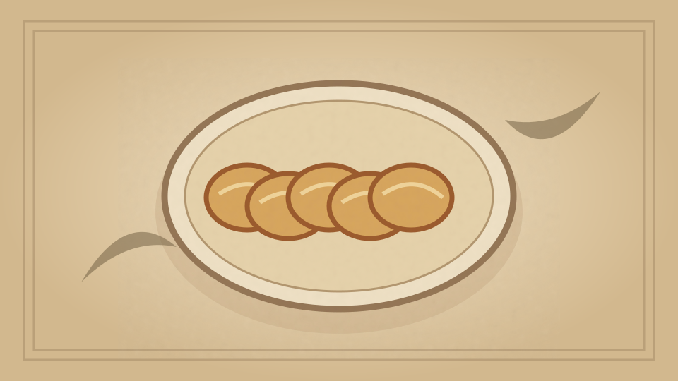

1910 · Fannie Merritt Farmer · BISCUITS, BREAKFAST CAKES, AND SHORTCAKES
One Egg Muffins I
The Boston Cooking-School Cook Book

Historical Recipe
The following text is extracted from the 1910 edition, retaining historical terminology and quantities.
Original Ingredients & Directions
3½ cups flour
6 teaspoons baking powder
1 teaspoon salt
1⅓ cups milk
3 tablespoons melted butter
1 egg
3 tablespoons sugar
Mix and sift dry ingredients; add gradually milk, egg well beaten, and melted butter. Bake in buttered gem pans twenty-five minutes. If iron pans are used they must be previously heated. This recipe makes thirty muffins. Use half the proportions given and a small egg, if half the number is required.
Automatically extracted transcription; editorial verification pending. Historical instructions may not meet modern food-safety standards.